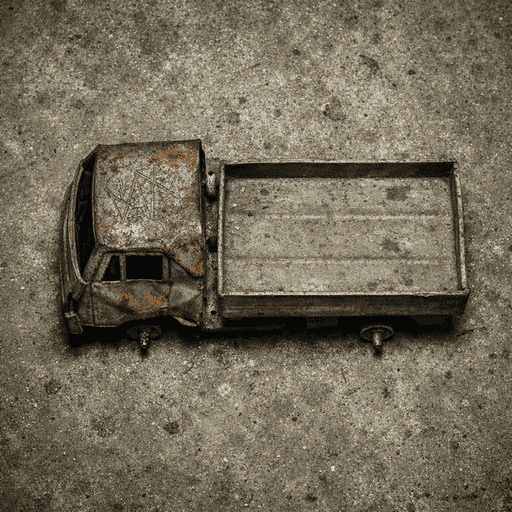
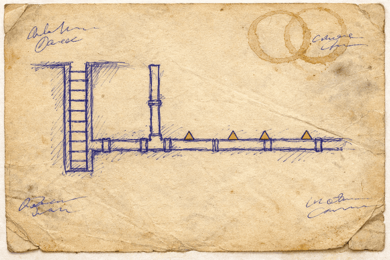

Болотов Э.А., он же «Багор». Каста Сборщиков, Станция сброса №7, ярус −12.
Стаж: двенадцать лет у пульта ленты.
Нажатий красной клавиши — по журналу.
«Лена в голове сказала: „Эдик“. — Я знаю.»
Биопанк-постапокалипсис · 15 глав · 90 дней пути
Болотов Э.А., он же «Багор». Каста Сборщиков, Станция сброса №7, ярус −12.
Стаж: двенадцать лет у пульта ленты.
Нажатий красной клавиши — по журналу.
«Лена в голове сказала: „Эдик“. — Я знаю.»
Ржавь. Поверхность. Сто пятьдесят лет после Поветрия.
Жёлтый Туман стабилен. Гниль под супрессором. *
Партия подлежит выводу за периметр Бетонника-7 в рамках программы утилизации.
— куда они на самом деле идут, никто не спрашивает.
| поз. 1 | Болотов Э.А. «Багор» | Шрамы — химия. Палач-бюрократ, знает изнанку системы. Двенадцать лет у клавиши. |
| поз. 2 | «Малёк» (Алик) | 12 лет. Белёсое пятно под ухом, тёплое. Считает губами: раз, два, три. |
| поз. 3 | Голос в голове | Лена. Мёртвая жена. Отвечает короче. Иногда молчит. |
| поз. 4 | Проводник «Игла» | Чистый. Разъём у основания черепа. Ведёт. Объяснять не собирается. |
прочие свидетели — по ходу следования.
90 суток · ≈1 450 км
— дойдёт не вся партия.
«Партия принята. Подпись: Болотов Э.А.»
«Ящик поехал, клапан щёлкнул, ящик ушёл в трубу.»
«Палец не дрожал. Палец давно не дрожал.»
«Я с Мальком иду.»
«Не тяну, Лен.»


Часто задаваемые вопросы о романе. Ответы по журналу, без домыслов.
«Ржавь» — биопанк-постапокалиптический роман о Багре (Эдуарде Болотове), Сборщике Станции сброса №7 Бетонника-7, который двенадцать лет нажимал красную клавишу и отправлял «бракованный биоматериал» в печь. Когда за его двенадцатилетним сыном Мальком приходят Глухие, Багор вынужден выйти на поверхность — в Ржавь — и пройти ~1450 километров до Улья на Севере. 15 глав, 90 дней пути, голос мёртвой жены Лены в голове и Гниль, которая, возможно, не враг. Финал — не победа, а экзистенциальная жертва без гарантий.
Биопанк-постапокалипсис, сурвайвал-триллер с элементами русского реализма. Ближайшие ориентиры — Кормак Маккарти («Дорога»), Дмитрий Глуховский («Метро 2033»), Виктор Пелевин, вселенные S.T.A.L.K.E.R. и Atomic Heart. Жёсткий реализм без магии: все «чудеса» имеют биологическое обоснование, Гниль — рукотворная нано-биологическая программа терраформирования. Царапина равна заражению, заражение — смерти. Никаких хэппи-эндов, только горько-сладкие концовки.
15 глав. 90 дней пути. Маршрут около 1450 километров: Бетонник-7 (Южный Урал, Челябинск/Магнитогорск) → Отвалы → мёртвый Екатеринбург → Очаг «Кольцо» → Полоса Гнили → сплав по Оби → Мёртвая Тайга → Улей (район Салехарда, за Полярным кругом). Действие происходит в 2243 году — примерно через 150 лет после Поветрия.
Багор (Эдуард Болотов) — рабочий Станции сброса №7 Бетонника-7, каста Сборщиков, палач-бюрократ системы с двенадцатью годами стажа у красной клавиши. Его арка — от «винтика, нажимающего кнопку» через этический выбор к отпусканию сына. Второй центральный герой — 12-летний сын Малёк (Алик), «чистый администратор» Гнили, единственный за 150 лет симбионт, способный запустить финальный протокол системы. В голове Багра постоянно звучит голос его мёртвой жены Лены. Проводник группы — Игла, Чистый с разъёмом у основания черепа.
Гниль — адаптивная нано-биологическая грибница, созданная учёными Старых Времён как попытка терраформирования планеты. Это не разумное существо, а гигантский био-архив и вычислительная сеть; её центральный сервер — Улей на Севере. Жёлтый Туман — химический супрессор Гнили, изначально лекарство: он остановил Гниль на заре Бетонников, но вызывает генетическую деградацию. Отключить его нельзя — без него 99% ослабленного населения превратится в Рваных мутантов за неделю.
Полный текст романа — на Author.Today. Бесплатный отрывок из первых глав доступен прямо на сайте автора: againte.gratis/rzhav/read/. Новости о новых главах — в Telegram-канале t.me/againtegratis и в канале Max max.ru/againtegratis.
Агатис Интегра (agaINTE GRAtis) — русскоязычный автор фантастики и постапокалипсиса. Пишет в жанрах survival fiction, биопанк, славянское фэнтези. Другие проекты автора — цикл «Сломанная Земля», «Жусан», «НАВМОР», «Четыре болта» по вселенной S.T.A.L.K.E.R., серия «Слово и Кровь». Официальный сайт: againte.gratis.